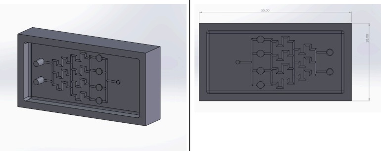
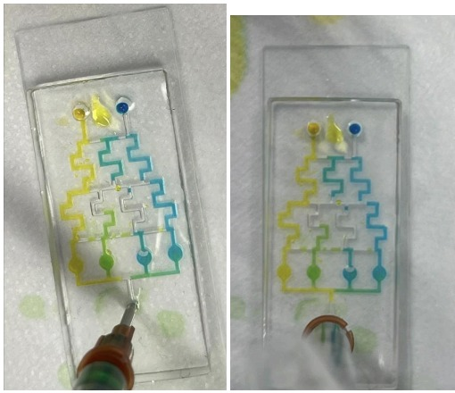
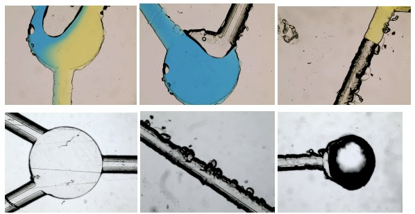

Aim / Goal
Design, fabricate and test microfluidic devices for controlled fluid mixing, progressing from a simple Y-channel design to a multi-channel gradient generator.
What we did
I created the Sprint 1 and Sprint 2 designs in SolidWorks and participated in laboratory testing. The early Y-channel prototypes were iteratively refined after testing exposed issues with insufficient mixing, reservoir-induced air bubbles and inconsistent inlet geometry. The final Sprint 1 design removed the problematic reservoir and incorporated the inlet holes directly into the CAD model.


Results
The final Sprint 2 device used 700 μm channels and a tree-like mixing network. After priming the device to resolve trapped air, it successfully produced a clear four-step colour gradient across the outlet reservoirs.
Microscopic inspection
Optical microscopy was used during development to inspect channel geometry, reservoirs and flow behaviour, helping identify bubbles and other practical fabrication issues.
